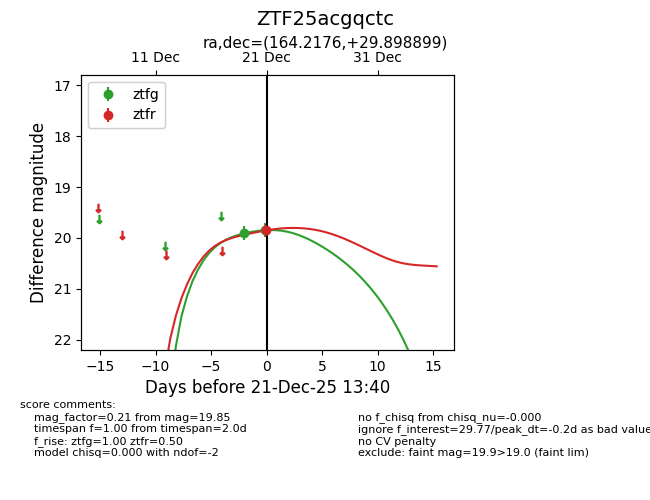
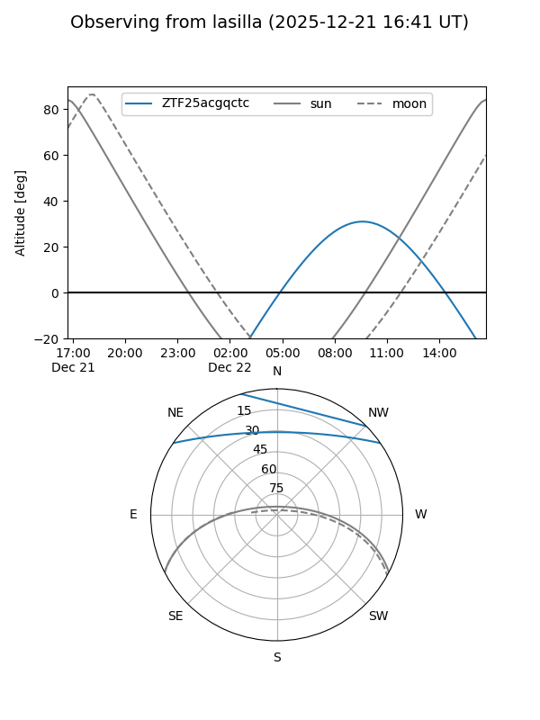
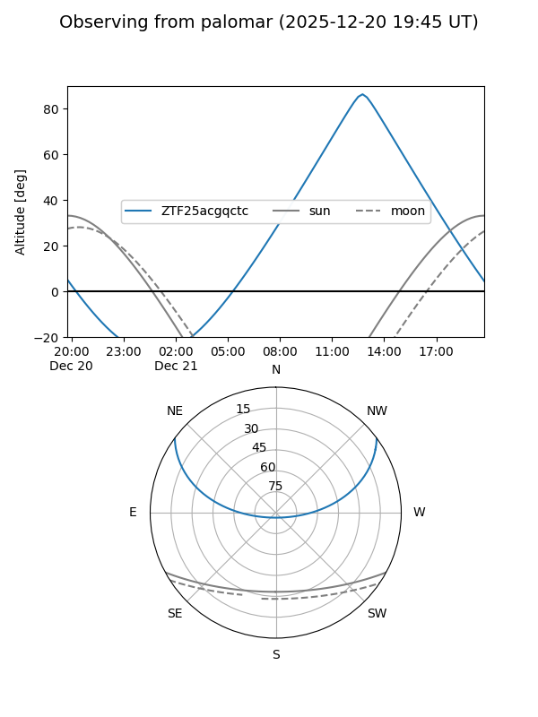
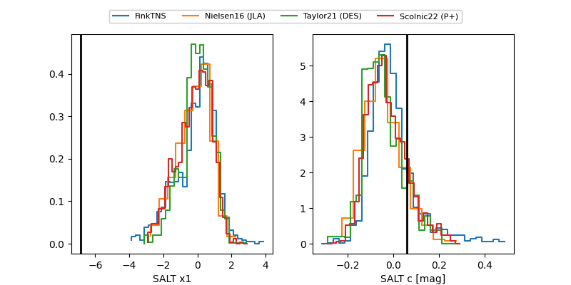

ZTF25acgqctc
Target ZTF25acgqctc at 2025-12-21 13:42
Aliases and brokers:
FINK: fink-portal.org/ZTF25acgqctc
Lasair: lasair-ztf.lsst.ac.uk/objects/ZTF25acgqctc
ALeRCE: alerce.online/object/ZTF25acgqctc
alt names
ZTF25acgqctc (ztf,fink_ztf)
Coordinates:
equatorial (ra, dec) = 164.2176,+29.89890
equatorial (HMS+DMS) = 10:56:52.23,+29:53:56.04
galactic (l, b) = (199.8305,+64.74534)
Flags:
Photometry:
last ztfg=19.85, ztfr=19.85
2 ztfg, 1 ztfr detections
Lightcurve

Visibility


Additional plots
